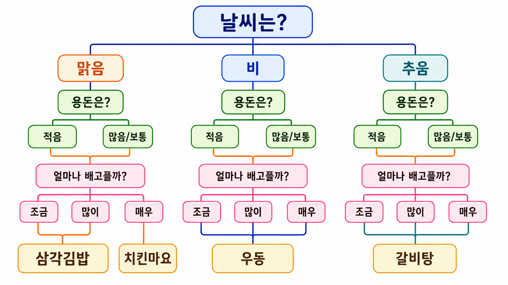
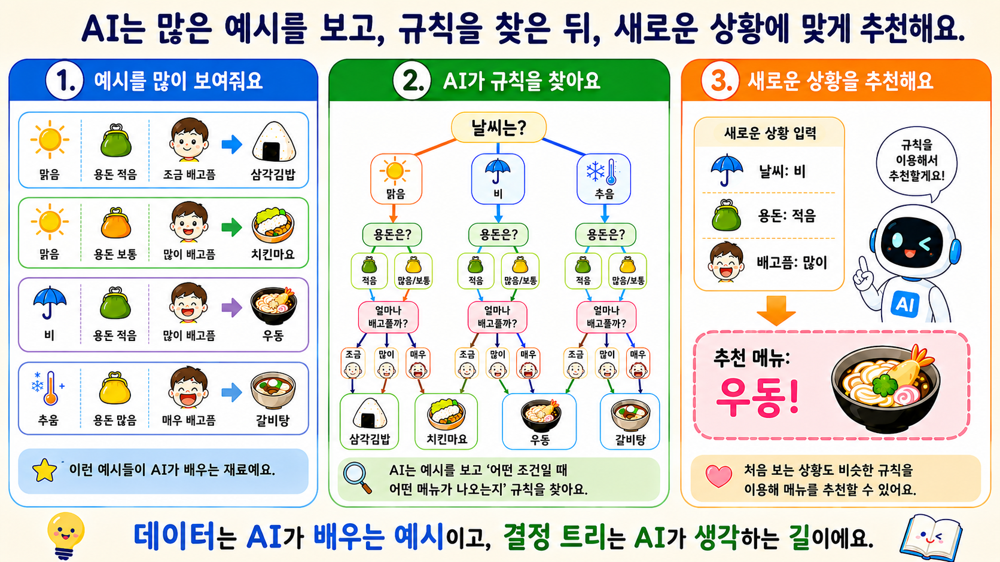

지난 시간 복습하기
MISSION 1
오늘의 미션
오늘은 AI가 날씨, 용돈, 배고픔 정도를 보고 나에게 어울리는 점심 메뉴를 추천하는 챗봇을 만들어 봅니다.
오늘 완성할 작품
날씨, 용돈, 배고픔 정도를 입력하면 AI가 점심 메뉴를 추천해 주는 챗봇
선형회귀와 결정 트리 비교하기
점메추 데이터 살펴보기
엔트리에서 결정 트리 모델 학습하기
오늘의 핵심 정리하기
마무리 퀴즈 풀기
READY
수업 파일 준비
아래 두 파일을 내려받아 엔트리 실습과 데이터 분석에 사용합니다.
엔트리에서 파일 불러오기를 선택한 뒤, 다운로드한 .ent 파일을 열어 사용합니다.
REVIEW
지난 시간 복습
지난 시간에는 데이터를 살펴보고, 데이터 사이의 관계를 찾고, AI가 숫자를 예측하는 활동을 했습니다. 아래 문제를 풀며 지난 내용을 떠올려 봅시다.
복습 퀴즈 1
데이터를 보기 쉽게 표현하기 위해 사용할 수 있는 것은 무엇인가요?
복습 퀴즈 2
두 숫자의 관계를 확인할 때 사용한 그래프는 무엇인가요?
복습 퀴즈 3
AI가 사용한 선형회귀는 어떤 일을 했나요?
CONCEPT 1
오늘 배울 AI는?
지난 시간의 선형회귀는 숫자를 예측하는 AI였습니다. 오늘 배울 결정 트리는 조건을 보고 미리 정해진 결과 범주 중 어디에 속하는지 판단하는 AI입니다.
| 구분 | 하는 일 | 예시 |
|---|---|---|
| 선형회귀 | 숫자를 예측함 | 구독자 수 예측, 공부 시간에 따른 점수 예측 |
| 결정 트리 | 결과를 분류함 | 점심 메뉴 추천, 동물 종류 분류, 날씨에 맞는 옷차림 추천 |
숫자가 얼마나 될까?
숫자의 흐름을 보고 앞으로의 값을 예상할 때 사용합니다.
여러 가지 중 무엇이 알맞을까?
조건을 따라가며 알맞은 종류나 결과를 판단할 때 사용합니다.
CONCEPT 2
결정 트리란?
결정 트리는 질문을 하나씩 따라가며 결과를 찾는 AI입니다. 쉽게 말하면 AI 스무고개와 비슷합니다.

CONDITION
오늘 사용할 조건
AI 점메추 봇은 세 가지 조건을 보고 메뉴를 추천합니다.
날씨
맑음 날씨가 맑고 따뜻한 날
비 비가 오는 날
추움 날씨가 춥게 느껴지는 날
용돈수준
적음 오늘 쓸 수 있는 돈이 적음
보통 오늘 쓸 수 있는 돈이 보통
많음 오늘 쓸 수 있는 돈이 많음
배고픔정도
조금 조금만 배고픔
보통 보통 정도로 배고픔
매우 아주 많이 배고픔
ENCODING
숫자 인코딩
AI가 데이터를 쉽게 배울 수 있도록 글자로 된 조건을 숫자로 바꾸어 사용합니다. 이렇게 글자를 숫자로 바꾸는 것을 숫자 인코딩이라고 합니다.
날씨
1 맑음
2 비
3 추움
용돈수준
1 적음
2 보통
3 많음
배고픔정도
1 조금
2 보통
3 매우
DATA
점메추 데이터 살펴보기
먼저 결정 트리가 예시를 보고 규칙을 찾은 뒤, 새로운 상황에 맞게 추천하는 과정을 살펴봅시다.

이제 우리가 만들 점메추 봇의 데이터 예시를 살펴봅시다. AI는 처음부터 메뉴를 알고 있지 않아서, 먼저 여러 가지 예시를 보여 주어야 합니다.
맑음 + 용돈 적음 + 조금 배고픔 삼각김밥
비 + 용돈 적음 + 매우 배고픔 우동
추움 + 용돈 많음 + 매우 배고픔 갈비탕
CHECK
데이터 확인하기
조건이 바뀌면 추천 메뉴도 바뀝니다. 표를 보고 알맞은 메뉴를 찾아봅시다.
데이터 퀴즈 1
날씨가 1, 용돈수준이 1, 배고픔정도가 1이면?
데이터 퀴즈 2
날씨가 3, 용돈수준이 3, 배고픔정도가 3이면?
데이터 퀴즈 3
날씨가 2, 용돈수준이 2, 배고픔정도가 3이면?
ENTRY AI
엔트리에서 AI 모델 학습하기
이제 엔트리에서 AI에게 데이터를 학습시켜 봅니다.
- 엔트리 작품을 엽니다.
- 점메추 CSV 데이터를 업로드합니다.
- 인공지능 모델 학습하기를 엽니다.
- 분류 모델을 선택합니다.
- 알고리즘에서 결정 트리를 선택합니다.
- 학습에 사용할 속성으로 날씨, 용돈수준, 배고픔정도를 선택합니다.
- 예측할 속성으로 추천메뉴를 선택합니다.
- 학습하기를 누릅니다.
- 학습이 끝나면 모델을 저장합니다.
| 학습에 사용할 속성 | 뜻 |
|---|---|
| 날씨 | 오늘 날씨 정보 |
| 용돈수준 | 오늘 사용할 수 있는 돈 |
| 배고픔정도 | 지금 얼마나 배고픈지 |
SUMMARY
오늘의 핵심 정리
| 개념 | 뜻 |
|---|---|
| 선형회귀 | 숫자의 흐름을 보고 숫자를 예측하는 방법 |
| 분류 | 데이터의 특징을 보고 미리 정해진 종류나 범주 중 어디에 속하는지 판단하는 것 |
| 결정 트리 | 질문을 따라가며 결과를 고르는 AI 방법 |
| 숫자 인코딩 | 글자 조건을 숫자로 바꾸는 것 |
FINAL QUIZ
마무리 퀴즈
퀴즈 1
선형회귀는 어떤 일을 하나요?
퀴즈 2
결정 트리에 가장 가까운 설명은 무엇인가요?
퀴즈 3
“맑음=1, 비=2, 추움=3”처럼 글자를 숫자로 바꾸는 이유는 무엇인가요?
퀴즈 4
오늘 AI가 추천메뉴를 고를 때 사용하는 조건이 아닌 것은 무엇인가요?
퀴즈 5
오늘 AI가 예측해야 하는 것은 무엇인가요?
FINISH
마무리
오늘 우리는 결정 트리를 사용해 AI 점심 메뉴 추천 챗봇을 만들었습니다. AI는 데이터를 보고 규칙을 찾고, 새로운 상황에 맞는 결과를 추천할 수 있습니다.
데이터는 AI가 배우는 예시이고, 결정 트리는 AI가 생각하는 길이에요.